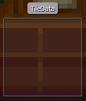
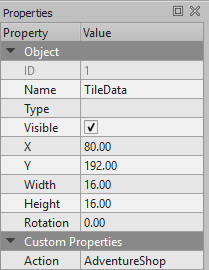
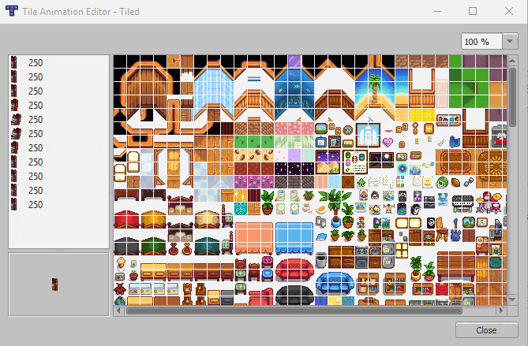

Modding:Maps
← Index
This page explains how to edit maps. This is an advanced guide for modders.
Intro
Basic concepts
- A map is the layout of the terrain (like water, cliffs, and land), terrain features (like bushes), buildings, paths, and triggers for a particular area. When you reach the edge of an area or enter a building, and the screen fades to black during the transition, you're moving between maps.
- Each map consists of several layers stacked one in front of the other. Objects in a layer closer to the front will hide objects in layers behind them. From back to front, the standard layers are...
layer name typical contents Back Terrain, water, and basic features (like permanent paths). Buildings Placeholders for buildings (like the farmhouse). Any tiles placed on this layer will act like a wall unless the tile property has a "Passable" "T". Paths Flooring, paths, grass, and debris (like stones, weeds, and stumps from the 'paths' tilesheet) which can be removed by the player. Front Objects that are drawn on top of things behind them, like most trees. These objects will be drawn on top of the player if the player is North of them but behind the player if the player is south of them. AlwaysFront Objects that are always drawn on top of other layers as well as the player. This is typically used for foreground effects like foliage cover. - (Using Tiled) There are 2 different types of layers along with the 5 main layers, Objects Layer (cloud-like icon) and Tile Layer (grid icon). The Tile Layer is where you make map edits (placing and removing tiles) and the Objects Layers is where you add and edit tile data. Your layers must match the ones above. Note that depending on the map, they may be missing a Paths or AlwaysFront layer
- Each layer consists of many tiles, which are 16×16 pixel squares placed in a grid to form the visible map. Each tile can have properties (e.g., passable / blocked), special logic (e.g., an action to perform when the player steps on them), and a picture to show. The picture is represented by a sprite index (or tile index), which is its position in an associated spritesheet (see next).
- Each map has one or more spritesheets (also known as tilesheets when talking about mods), which contains the available tiles and images that are put together to form the visible map.
Tile coordinates
Each tile has an (x, y) coordinate which represents its position on the map, where (0, 0) is the top-left tile. The x value increases towards the right, and y increases downwards. For example:
You can use the Debug Mode mod to see tile coordinates in-game.
Map formats
There are two map formats used in Stardew Valley modding: .tmx (from the Tiled map editor) and .tbin (from the now-deprecated tIDE map editor). The features supported by both formats are almost identical, but there are a few differences:
| feature | .tmx | .tbin |
|---|---|---|
| format | ✓ XML (basically text) | ✘ binary |
| edit in Tiled | ✓ supported | ✓ supported with plugin |
| edit directly | ✓ can open in a text editor | ✘ not supported |
| tile flip | ✓ supported | ✘ not supported |
| tile rotation | ✓ supported | ✘ not supported |
| source control | ✓ efficient storage, can diff changes | ✘ inefficient storage (need to copy entire file with each commit), can't diff changes |
.tmx is recommended per the above, but both formats are fine to use, and you can convert between them in Tiled by clicking File > Export As.
Tilesets vs Tilesheets
Tilesheets are the .png files used as source images. Tilesheets have no animation, properties, terrains, or anything else but pixels associated with them -- they're just images. Tilesets are Tiled's XML files that contain all the information about how the map uses the source image. They are confusingly named and often used interchangeably.
Getting started
There are two main ways to edit a map.
Using SMAPI
Creating a SMAPI mod requires programming, but it's much more powerful and multiple SMAPI mods can edit the same map. If you want to use this approach:
- Create a SMAPI mod.
- See Making changes with SMAPI below.
The rest of this guide assumes you're using Tiled, but many of the concepts are transferrable and you can use both Tiled and SMAPI (e.g., create/edit maps in Tiled and load/edit them in SMAPI).
Using Tiled
Tiled is a popular map editor that can be used to edit Stardew Valley maps, no programming needed. You need to unpack the map's XNB, edit the map, and make a Content Patcher or SMAPI mod to load your map. If you want to use this approach:
- Install the latest version of Tiled.
- Once installed, at the top left, go to Edit > Preferences > Plugins and enable the tbin plugin (tbin.dll on Windows, libtbin.so on Linux, or libtbin.dylib on Mac).
- Set the following settings:
setting value reason View > Snapping > Snap to Grid ✓ enabled This is required to convert objects back into the game's format. View > Highlight Current Layer ✓ enabled This makes it more clear which tile you're editing. - See Modding:Editing XNB files for help unpacking & packing the map files.
- See instructions below for map changes.
(If you use xnbcli to unpack the original game maps, you'll need the .tbin plugin even if you plan to use .tmx since xnbcli still produces .tbin files.)
Map edits
Editing maps
Important note: when making custom maps, always start with a vanilla map and edit it. Don't try to create a new map in Tiled; the game needs certain tiles, map properties, etc to be present. Also note that when making a map edit or adding a custom map, sizes bigger than 155 for height and 199 for width will break the layering.
- Unpack the game's Content/Maps folder and create a copy to edit your maps in. Use this copy of the folder to edit any maps in before moving them to your mod release folder.
- Use the same method to unpack the map you want to edit if it is not a vanilla one, then place the map in your editing folder.
- Open the .tbin or .tmx file via Tiled. Note: make sure the file is in the same folder as the unpacked tilesheets!
- Make your changes.
- Save the file. Don't use Save as to change folders, as your tilesheet paths will be wrong.
- Move the .tbin or .tmx file, and any custom tilesheets it needs, to your mod release folder. Place them in the assets folder.
- Load your map via SMAPI or Content Patcher (or another framework mod).
Custom map
You can add a new map and location to the game. The easiest option is to create the map using Tiled, then use Content Patcher to add the custom location to the game. After loading your save, you can use this console command to jump to the map: debug warp YourLocationName X Y.
Note that the map must be built in a certain pattern; look at the maps in the Content/Maps folder for examples. It's often easier to start from an existing map and modify it, instead of starting from scratch.
You can add new locations in C# yourself, but be aware of factors like object persistence and NPC pathfinding that are easy to get wrong. If you really want to do it yourself, use the specialized LoadStageChanged event to add the location to Game1.locations during the CreatedInitialLocations and SaveAddedLocations stage.
Adding tilesets
You can add new sprites, tiles, or images to a map, from both custom and vanilla sources. If you're editing a vanilla map, make sure to prefix custom tileset names with z_ to avoid shifting the vanilla tilesheet indexes.
- Open the map that you created or are editing.
- Click Map then Add External Tileset... in the top menu, and open a .tsx file you have in the same folder.
- You should have a new copy of the tileset in your map, with any saved animations, properties, or terrains still intact.
Re-using vanilla tilesets
If you want to use a tilesheet like spring_outdoorsTileSheet.png in your map, adding a new tileset from a .png file means you need to re-animate any animated tiles, and re-add properties like diggable. (You'll also lose any terrain types that had been created for that set.) You can avoid this by first exporting them from an existing map, then using external tilesets, instead.
- Open an existing map that already has the properties and animations you want.
- In the tileset pane, click the wrench to Edit Tileset. It should open a new edit tab.
- In the new window that opens, click File, then Export as... and save it as a .tsx file.
- Close the tileset editor.
Replace existing tileset
If you are already using a tilesheet image, you can replace its tileset.
- Open the map that you created or are editing.
- In the tileset pane on the right, click the tab for your existing version.
- Under that, click the Replace Tileset button.
- Choose the .tsx file you saved, and click Open.
Adding a new custom tilesheet
If you made a your own tilesheet and are adding it to a map the first time, you can create a new tileset from image.
- Create your spritesheet and place it in the same folder as your .tbin or .tmx map file. This should be a PNG image with images divided into 16x16 tiles (see Modding:Editing XNB files#Intro for examples).
- Open the map in Tiled.
- Add the custom spritesheet:
- In the Tilesets pane, click the
 button.
button. - Give it a descriptive name (like 'zcute bugs') and choose the image source.
- Make sure that Embed in map is checked.
- Keep the defaults for the other settings and click OK.
- In the Tilesets pane, click the
Painting tiles onto your map
- In the Layers pane, click the layer you want to edit.
- At the top left of Tiled's toolbar, click the Stamp Brush.
- In the Tilesets pane, click the tab for the tileset you want to use.
- In the Tilesets pane, click one tile to select it. To choose multiple, click and drag the cursor.
- Move the cursor to the map, and you'll see an overlay with the tiles you selected.
- Click the map to place those tiles on the selected layer.
Map properties
Each map can have multiple map properties, which define attributes and behaviour associated with the map like lighting, music, warp points, etc. Each property has a name (which defines the type of property), type (always 'string' in Stardew Valley), and value (which configures the property). See known properties below.
In Tiled:
- Click Map on the toolbar and choose Map Properties.
- View and edit properties using the GUI.
Tile properties
Tile properties are set on individual map tiles. They can change game behaviour (like whether the player can cross them), or perform actions when the player steps on or clicks the tile. Each property has a name, type (always 'string' in Stardew Valley), and value. In Tiled these are represented by two types: object properties only apply to the selected tile, while tile properties apply to every instance of that tile. In general you'll always set object properties, so we'll only cover those.
Note that tile properties need to have a tile associated with them; if there is no tile, they'll simply not be applied.
To view tile properties:
- Select the object layer in the Layers pane.
- Choose the
 select object tool in the toolbar.
select object tool in the toolbar. - Click the object whose properties you want to view. Objects are represented with a gray selection box on the map:
 - The object properties will be shown in the Properties pane.

To edit properties for an existing object:
- Change a value: click the value field and enter the new value.
- Change a name: select the property and click the
 icon.
icon. - Add a property: click the
 icon, enter the property name, make sure the selected type is "string", and click OK.
icon, enter the property name, make sure the selected type is "string", and click OK.
To add a new object:
- Select the object layer in the Layers pane.
There should be one object layer for each tile layer. If the object layer is missing, create one with the same name as the right tile layer. - Choose the
 insert rectangle tool from the toolbar.
insert rectangle tool from the toolbar. - Click and drag the rectangle over the tile you want to edit . Make sure it snaps to the tile grid (see #Using Tiled), and only one tile is selected.
- Change its Name field to TileData.
- See previous for how to edit its properties.
Tiles
You can edit the tiles for an existing map. See the Tiled documentation for more info.
Tile animation
You can animate tiles to create effects like Gil in his rocking chair (see example at right).
In Tiled:
- Click the edit button (wrench icon) for the tilesheet in the Tilesets pane.
- Select the tile you want to animate in the new view.
- Click Tileset > Tile Animation Editor in the toolbar to show that window.
- In the new window, drag tiles from the tilesheet into the box on the left to create a frame (one image in the sequence). If you need to delete frames, select the frame(s) and press Backspace/Delete(Windows) or fn + Backspace(Apple)
- Double-click the numbers to change how long each frame stays on the screen before the next one (in milliseconds). Make sure every frame has the same time; the game can't handle variable frame times. For example, here's the animation editor showing one of the tiles of Gil rocking:
 - When you're done, close the pane.
- The animated tiles in the Tilesets pane will now have a little symbol in the bottom-right corner:

The animation is now part of that tile. Every instance of that tile on the map will now have the same animation.
Tile flip/rotation
You can rotate and flip tiles without needing to create rotated/flipped versions of the tilesheet. This needs SMAPI 3.4 or later to be installed; the base game doesn't recognize tile transforms.
In Tiled:
- With the stamp tool selected, click the tile in the tilesheet you want to use.
- Click the flip or rotate buttons (see image at right).
- Click the map to place the flipped/rotated tile.
Tile transforms aren't supported by the .tbin plugin. See map formats for more info.
Advanced edits
Sitting on non-furniture chairs
Players can sit on chairs that are part of the map. This works by checking the tile on the Buildings layer, and comparing its tilesheet and tilesheet index to the data in Data\ChairTiles.
Each entry has a key in the form sheet filename/tile X/tile Y:
| field | description |
|---|---|
| sheet filename | The file name of the tilesheet, without the file extension. For example, for a tilesheet loaded from assets/some-tilesheet.png, this should be some-tilesheet.
|
| tile X tile Y |
The tile's X and Y position in the map tilesheet, starting at zero. |
And a value in the form width in tiles/height in tiles/direction/type/draw tile X/draw tile Y/is seasonal/alternate tilesheet:
| field | description |
|---|---|
| width in tiles height in tiles |
The size of the seat in tiles. For example, a width of 2 lets the player sit on the next tile to the right of it too. |
| direction | The direction the player should face when sitting. The possible values are down, left, right, up, or opposite. Any other value defaults to up. |
| type | Either:
|
| draw tile X draw tile Y |
The X and Y position in TileSheets\ChairTiles (or the custom tilesheet) to draw when the player is sitting, starting at 0. If the width and/or height are more than 1, this is the position of the top-left tile. |
| is seasonal | Whether to draw seasonal variants when sitting. If enabled, the <draw tile X> and <draw tile Y> are offset by one width for each season. In other words, the spring/summer/fall/winter sprites should appear in the draw tilesheet directly adjacent, moving rightward in that order.
|
| alternate tilesheet | (Optional) The asset name for the tilesheet from which to get the draw tiles, using \\ (two backslashes) as the path separator. The default value is TileSheets\\ChairTiles. |
Known map properties
¹
Building construction
| property | explanation |
|---|---|
| CanBuildHere T (valid in any outdoor location) |
Whether to allow constructing buildings in this location. The game will adjust automatically to account for it (e.g. Robin will let you choose where to build). |
BuildConditions <query>(valid in any outdoor location) |
If CanBuildHere is set, an optional game state query which indicates whether building is allowed currently. |
| LooserBuildRestrictions T (valid in any outdoor location) |
If set, tiles don't need to be marked Buildable T or Diggable T in their properties. Tiles can be blocked with Buildable F instead. The other restrictions still apply. |
ValidBuildRect <x> <y> <width> <height>(valid in any outdoor location) |
The tile area within the map where buildings may be placed. If omitted, buildings may be placed in any open space in the map. |
Crops
| property | explanation |
|---|---|
| AllowGiantCrops T | If set with any non-blank value, giant crops can grow in this location (if crops are also allowed per the crop data or PlantableLocations context field). |
DirtDecayChance <chance>
|
The probability that each dirt tile will disappear overnight if it doesn't contain a crop, as a value between 0 (never) and 1 (always). Defaults to 0 (greenhouses), 0.1 (farms), and 1 (anywhere else). |
Plants, forage, & item spawning
| property | explanation |
|---|---|
| AllowGrassGrowInWinter T² (valid in any location) |
Allows grass to spread in winter. |
| AllowGrassSurviveInWinter T² (valid in any location) |
Allows grass that's alive on the last day of fall to survive through to winter. |
| EnableGrassSpread T² (valid in any location) |
Gives grass in the location a chance to spread each day. |
| Fall_Objects T² Spring_Objects T² Summer_Objects T² Winter_Objects T² |
Whether to spawn seasonal objects on spawnable tiles based on the data in Data\Locations.xnb. Example: Fall_Objects. |
Feed <int x> <int y>(valid in coops and barns) |
Example: Feed 3 2. The Feed map property has been deprecated with 1.6. The FeedHopper is now being defined in Data/Buildings as a IndoorItems entry "(BC)99" |
| ForceAllowTreePlanting T² (valid in any location) |
Allows planting trees (both wild and fruit) in this location, even if it normally wouldn't be allowed. |
| ForceSpawnForageables T² (valid in indoor locations) |
Enables forage items spawning in that location. |
| skipWeedGrowth T² (valid in any location) |
Prevents weeds from spawning and spreading in this location. |
| SpawnBeachFarmForage T² (valid in farm) |
Randomly spawns beach forage and supply crates on the farm (like the vanilla beach farm). Forage and crates will only appear on tiles which have the BeachSpawn T property on the Back layer, are clear for placement, and don't have a tile on the AlwaysFront layer. |
| SpawnForestFarmForage T² (valid in farm) |
Randomly spawns forest forage on the farm (like the vanilla forest farm). Forage will only spawn on tiles which have the Type Grass tile property, are clear for placement, and don't have a tile on the AlwaysFront layer. |
| SpawnGrassFromPathsOnNewYear T² (valid in any location) |
Spawns grass on every tile with index 22 on the Paths layer when a new year starts. See also SpawnRandomGrassOnNewYear. |
| SpawnDebrisOnNewMonth T SpawnDebrisOnNewYear T² (valid in any location) |
Spawns weeds, stones, or twigs at random positions when a new month/year starts (subject to their usual spawn rules). |
SpawnMountainFarmOreRect <tile X> <tile Y> <tile width> <tile height>(valid in farm) |
The tile area on the farm map where ores should randomly spawn (like the vanilla hilltop farm). Ores will only spawn on tiles which have the Type Dirt tile property and are clear for object placement. |
| SpawnRandomGrassOnNewYear T² (valid in any location) |
Spawns grass at random positions when a new year starts (subject to its usual spawn rules). See also SpawnGrassFromPathsOnNewYear. |
Stumps [<int x> <int y> <unused>]+(valid in any location) |
Adds stumps to the Secret Woods map daily. The third field for each stump appears to be unused. Example: Stumps 24 6 3 29 7 3 26 10 3 46 6 3 34 26 3 41 26 3. |
Treasure <type> <int id>(valid in any location) |
Adds buried treasure that the player can dig up. <type> can be any of the following: Coins, Copper, Coal, Iron, Gold, Iridium, CaveCarrot, Arch, Object. If set to Arch or Object, <id> may be used to specify the ID of the item that is buried.
|
Trees [<int x> <int y> <int type>]+(valid in any location) |
Adds trees to the map. The <x> <y> fields are the tile coordinates, and <type> is the tree type (0: oak, 1: maple, 2: pine, 5: palm, 6: mushroom tree, 7: mahogany).Example: Trees 17 18 2 20 31 2. |
Warps & map positions
| property | explanation |
|---|---|
AllowWakeUpWithoutBed <allow>
|
Whether the player can wake up in this location without a bed, similar to the island farmhouse. This is typically used with PassOutLocations in Data/LocationContexts. |
BackwoodsEntry [<int x> <int y>](valid in farm) |
The position the player is warped to when entering the farm from the Backwoods. |
BusStopEntry [<int x> <int y>](valid in farm) |
The position the player is warped to when entering the farm from the Bus Stop. |
DefaultWarpLocation <x> <y>(valid in any location) |
The default arrival tile, used when a player or NPC is added to the location without a target tile (e.g. using debug commands like debug warp or debug eventbyid). |
EntryLocation <tile X> <tile Y>(valid in farmhouse) |
Sets the tile on which the player appears when they warp into the farmhouse. |
FarmCaveEntry [<int x> <int y>](valid in farm) |
The position the player is warped to when entering the farm from the farm cave. |
FarmHouseEntry [<int x> <int y>](valid in farm) |
Changes the position of the Farm House. Corresponds to the front door, or the position the player will be warped to when leaving the house. |
ForestEntry [<int x> <int y>](valid in farm) |
The position the player is warped to when entering the farm from the Cindersap Forest. |
GrandpaShrineLocation [<int x> <int y>](valid in farm) |
The position of grandpa's shrine. Corresponds to the upper left corner of note. |
GreenhouseLocation [<int x> <int y>](valid in farm) |
The default position of the greenhouse. Corresponds to the upper left corner of the greenhouse's foundation. |
KitchenStandingLocation [<int x> <int y>](valid in farmhouse) |
The position the player's spouse will stand when using the kitchen. |
MailboxLocation [<int x> <int y>](valid in farm) |
The position of the player's mailbox. Corresponds to the upper left corner. |
NPCWarp [<int fromX> <int fromY> <string toArea> <int toX> <int toY>]+(valid in any location) |
Equivalent to Warp, but only usable by npcs. |
PetBowlLocation <x> <y>(valid in the farm) |
The default position of the pet bowl |
ShippingBinLocation [<int x> <int y>](valid in farm) |
The position of the default shipping bin. Corresponds to the upper left corner. |
SpouseAreaLocation [<int x> <int y>](valid in farm) |
The position of the the 4x4 outdoor spouse area. Corresponds to the upper left corner. |
SpouseRoomPosition <x> <y>(valid in farmhouse) |
The top-left position at which to place the spouse room. |
TravelingCartPosition <x> <y>(valid in the forest) |
The top-left position at which to place the Traveling Cart. This is the top-left corner of the collision box, so the roof will extend two tiles above this tile. |
Warp [<int fromX> <int fromY> <string toArea> <int toX> <int toY>]+(valid in any location) |
Sets the tiles which warp the player to another map (e.g., doors). The <fromX> <fromY> fields are the tile coordinates that initiate the warp, and <toArea> <toX> <toY> are the name of the in-game location to warp to and the tile coordinates within it.Example: 6 20 Mountain 76 9. |
WarpTotemEntry[<int x> <int y>](valid in farm) |
The position the player is warped to when teleporting to the farm via Warp Totem or Return Scepter. |
Audio
| property | explanation |
|---|---|
BrookSounds [<int x> <int y> <int type>](valid in outdoor locations) |
Adds sound sources. The <x> <y> fields are the tile coordinates, and <type> is the ambient sound ID. The <type> of sound can be one of...
|
Music <string name>(valid in any location) |
Sets the music that plays when the player enters, where <name> is the cue name in the audio files.Example: Music MarlonsTheme. (Deprecated; use the music fields in Data/Locations instead. This property is only applied if the location has no music in Data/Locations.) |
Music <int start> <int end> <string name>(valid in any location) |
Sets the music that plays when the player enters, where <name> is the cue name in the audio files, music will only play if the time is between <int start> (inclusive) and <int end> (exclusive).Example: Music 800 1200 MarlonsTheme. (Deprecated; use the music fields in Data/Locations instead. This property is only applied if the location has no music in Data/Locations.) |
Lighting
| property | explanation |
|---|---|
AmbientLight <byte r> <byte g> <byte b>(valid in indoor locations and locations that ignore outdoor lighting) |
Sets the RGB colour that is subtracted from white (255,255,255) in order to create the ambient light. Example: AmbientLight 95 95 95 for a normal indoor daytime lighting. |
AmbientNightLight <byte r> <byte g> <byte b>(valid in indoor locations and locations that ignore outdoor lighting) |
Sets the RGB colour that is subtracted from white (255,255,255) in order to create the ambient night light. Example: AmbientLight 150 150 30 for greenhouse nighttime lighting. |
| forceLoadPathLayerLights T² (valid in outdoor non-festival locations) |
Whether to load lights from the Paths layer on maps where they would not normally be. Example: forceLoadPathLayerLights true. |
| IgnoreLightingTiles T² (valid in indoor locations) |
Whether to ignore lights on the Front and Buildings layers. Example: IgnoreLightingTiles true. |
Light [<int x> <int y> <int type>]+(valid in any location) |
Adds light sources. The <type> field is the kind of light source (e.g., 4 for twin candles), and <x> <y> are the tile coordinates.The <type> of light source can be one of...
Any other value will crash the game. |
WindowLight [<int x> <int y> <int type>]+(valid in any location) |
Adds light sources that are only lit during the day when it is not raining (like the light coming through a window). See Light for details. |
Map & tile changes
| property | explanation |
|---|---|
| ClearEmptyDirtOnNewMonth T² (valid in any location) |
Destroy most tilled dirt that doesn't contain crops when a new year starts. |
DayTiles [<string layerName> <int x> <int y> <int tilesheetIndex>]+(valid in any location) |
Sets tiles to appear between 6AM to 7PM. Anytime before 7pm, this finds the tile at position (<x>, <y>) on the map layer matching <layerName>, changes its tilesheet index to the specified <tilesheetIndex>, and adds a glow to simulate daylight. The glow will only be added if the location is indoors and the <tilesheetIndex> is 256, 288, 405, 469, or 1224. The parameters can be repeated to affect multiple tiles.Example: DayTiles Front 3 1 256 Front 3 2 288. |
NightTiles [<string layerName> <int x> <int y> <int tilesheetIndex>]+(valid in any location) |
Changes the tile after 7pm. Outside, it works along DayTiles: set a DayTiles tile for the map to load between 6am to 7pm, then a NightTiles to load between 7pm to the end of the day. It is mostly used for lamps in the game. Note that night time starts at different times depending on season (Day Cycle). |
Doors [<int x> <int y> <string sheetID> <int tileID>]+(valid in indoor locations) |
Adds functionality to interior doors. Used with Action Door tile properties. The <x> <y> fields are the tile coordinates, <sheetID> is the name of the sheet containing the door sprite, and <tileID> is the tile index in the spritesheet.
|
Fishing
| property | explanation |
|---|---|
FarmFishLocationOverride <location name> <chance>(valid in farm) |
Adds an alternative location name when catching fish, where the <chance> is a decimal value between 0 (never happens) and 1 (always happens). For example, FarmFishLocationOverride Mountain 0.5 adds a 50% chance of catching mountain fish instead of the normal fish for that location. The location name is case-sensitive, and matches those shown by the Debug Mode mod.
|
| FarmOceanCrabPotOverride T² (valid in farm) |
Causes crab pots on the farm should catch ocean fish. |
Farmhouse interior
| property | explanation |
|---|---|
FarmHouseFlooring <flooring id>(valid in farm) |
Sets the initial farmhouse floor to the given ID when creating a new save. These are mapped to the 4x4 tile areas in the Maps/walls_and_floors tilesheet starting at tile index 336 (where index 0 is mapped to the top-left square). |
FarmHouseFurniture [<furniture ID> <tile X> <tile Y> <rotations>]+(valid in farm) |
Spawns initial furniture in the farmhouse when creating a new save. If you add multiple furniture to the same tile, the first one will be placed on the ground and the last one will be placed on the first one. |
FarmHouseStarterGift [<id> [count]]+
|
The items that should appear in the initial gift box placed in the farmhouse when the save is created. This consists of one or more pairs of item ID (which can be qualified or unqualified) and count. The count is optional on the last entry.
For example, this will add 10 pufferfish (object 128) and a blobfish mask (hat 56): FarmHouseStarterGift (O)128 10 (H)56 1 If omitted, the default items (usually a 15 parsnip seeds) are added instead. |
FarmHouseStarterSeedsPosition <tile X> <tile Y>(valid in farm) |
Sets the tile position in the farmhouse where the seed package is placed when creating a new save. |
FarmHouseWallpaper <wallpaper id>(valid in farm) |
Sets the initial farmhouse wallpaper to the given ID when creating a new save. These are mapped to the 1x4 tile areas in the Maps/walls_and_floors tilesheet starting from the top-left. |
Other location metadata
| property | explanation |
|---|---|
| CanCaskHere T² (valid in any location) |
Allows casks to work in that location. |
| indoorWater T² (valid in indoor locations) |
Enables water logic (ie. fishing, etc.) in that location. |
| IsFarm T² (valid in any location) |
Marks the location as a farm. This only affects generic location/interaction logic which checks the in-code location.IsFarm property; logic hardcoded into the game's Farm class (e.g., farm animals, pets, crows/scarecrows, greenhouse, farm buildings, etc) is still limited to the actual farm.
|
| IsGreenhouse T² (valid in any location) |
Marks the location as a greenhouse. |
| LocationContext Default (valid in any location) |
Sets the map to be part of the mainland for game logic purposes, like weather. |
| LocationContext Island (valid in any location) |
Sets the map to be part of Ginger Island for game logic purposes, like weather. |
| Outdoors T² (valid in any location) |
Sets whether the location is outdoors. Example: Outdoors true. |
ProduceArea <int x> <int y> <int width> <int height>(valid in coops and barns) |
Sets the area where animals can spawn within a coop or barn. Example: ProduceArea 6 4 8 7. |
ScreenshotRegion <int left> <int top> <int right> <int bottom>(valid in any location) |
Constrains the portion of the map rendered when screenshots are taken. Example: ScreenshotRegion 0 27 69 61. |
SeasonOverride [<string season>](valid in any location) |
Assumes a specific season for most game checks. (If a crop is in season, which tilesheet to use, etc.) |
| TreatAsOutdoors T² (valid in indoor locations) |
The location is treated as outdoors for the purposes of spawning anything other than lights from the Paths layer and yielding Coal from breaking rocks. Example: TreatAsOutdoors true. |
UniquePortrait [<str name>]+(valid in any location) |
Switches the portraits for the named NPCs to the unique variants for the location. An NPC Jane in location Room will switch to portrait Portraits/Jane_Room. Example: UniquePortrait Maru. (Deprecated; use custom NPC appearances instead. These properties will override NPC appearances.) |
UniqueSprite [<str name>]+(valid in any location) |
Switches the spritesheets for the named NPCs to the unique variants for the location. An NPC Jane in location Room will switch to spritesheet Characters/Jane_Room. Example: UniqueSprite Maru. (Deprecated; use custom NPC appearances instead. These properties will override NPC appearances.) |
| ViewportFollowPlayer T² (valid in any location) |
Forces the viewport to stay centered on the player. Example: ViewportFollowPlayer. |
¹ Map properties are primarily handled in various methods of the GameLocation class, particularly resetLocalState.
² The T value (short for true) is conventional, but any non-empty value will work too.
Known tile properties
This excludes very specialised properties like TouchAction WomensLocker.¹
General
| layer | property | explanation |
|---|---|---|
| Back | BeachSpawn T² | Allows spawning of beach-related forage and supply crates on this tile, when using the beach farm type. |
| Back | Bed T² | If the player stands on this tile, they're considered in bed for the purposes of stamina regen (in multiplayer) and pass-out logic. |
| Back | Buildable T² | Allows farm buildings to be placed on this tile if there are no other obstructions. |
| Back | DefaultBedPosition T² | Used in the upgraded farmhouse for the initial placement of the player bed and when migrating saves. |
| Back | DefaultChildBedPosition T² | Used in the upgraded farmhouse for the initial placement of the child beds. |
| Back | Diggable T² | Marks the tile as diggable with the hoe and enables planting crops. Also allows grass to spread to this tile. |
| Back | NoFishing T² | Prevents the player from casting the line onto this tile when fishing. |
| Back | NoFurniture T² | Prevents the player from placing furniture on this tile. |
| Back | NoPath | Excludes this tile from NPC pathing, making them go around it if necesssary. |
| Back | NoSpawn All NoSpawn True |
Combines NoSpawn Grass and NoSpawn Tree. |
| Back | NoSpawn False | Disables any previous NoSpawn property on the tile. For example, this can be used to enable spawning on a tile which has a NoSpawn tile index property. |
| Back | NoSpawn Grass | Prevents debris (e.g., weeds or stones) from spawning on this tile. |
| Back | NoSpawn Tree | Prevents trees from spawning on this tile. Prevents the player from planting trees on this tile, except on the farm. If a tree is already on this tile, prevents it from growing. |
| Back | NoSprinklers T² | Prevents sprinklers from being placed on this tile. |
| Back | NPCBarrier T² | Prevents NPCs from crossing this tile when used on the Farm (including coops, barns, and slime hutches), UndergroundMine, or the island. Also prevents some spawns on this tile, in those locations. |
| Back | Passable T² | Prevents players from walking or placing objects on this tile, even if they'd normally be able to do. (Direct opposite of Buildings Passable T below.) Commonly used on certain water tiles for bordering the sides of bridges, to prevent players from walking off into open water. Can be added as a single TileData object for a specific tile, or (more commonly) to every instance of a tile by editing the tileset and adding it to the tile index. |
| Back | Placeable T² | Prevents players from placing objects on this tile. |
| Back | TemporaryBarrier T² | Used only briefly when doors open. Marks this tile impassable to a player, while NPCs will treat it as an obstacle to pause before rushing through. |
| Back | Type <str type>
|
Sets the tile type for various game logic (e.g., step sounds or planting crops), where <type> is one of Dirt, Stone, Grass, or Wood.
|
| Back | Water T² | Marks the tile as a water tile for various game logic (i.e., items splash into it, can refill watering can from it, can possibly fish in it, can possibly place crab pots in it, will water nearby paddy crops, will block most open-tile checks, will regenerate health in it if indoors, and will draw animated overlay over it if indoors, outdoors, in the Mines, Sewer, or Submarine; or otherwise not in the Desert).
Setting the value to I (uppercase i) will make the tile behave like normal water, without rendering the water animation overlay. |
| Back | WaterSource T² | Lets the player refill the watering can from this tile. |
| Buildings | NPCPassable T² | NPC-only version of Passable below. Allows NPCs to pass through this tile. |
| Buildings | Passable T² | Allows passing through a tile, even though Buildings tiles can't normally be walked through. Often used for small footbridges that need to be on Buildings, over water. Direct opposite of Back Passable T above. Can be added as a single TileData object for a specific tile, or (more commonly) to every instance of a tile by editing the tileset and adding it to the tile index. |
| Buildings | ProjectilePassable T² | Allows projectiles to cross tiles that would normally block them (e.g., to allow shooting into lava pools) |
| Buildings | Shadow T² | Player-only version of Passable above. Allows the player to pass through this tile, but not NPCs. |
| Paths | Order <I>
|
To place on index 29 and 30 of the Paths tilsheet. Set the order the cabins will spawn at the creation of a Multiplayer save. |
| Paths | SpawnTree <type> <ID> [stage on spawn] [stage on regrow]
|
Spawns a tree when the map is created, where:
The tile must have Paths tile index 34. |
TouchAction
The TouchAction property makes something happen when the player steps on the tile:
| layer | property | explanation |
|---|---|---|
| Back | TouchAction ChangeIntoSwimsuit | Changes the player into their swimsuit and disables running. |
| Back | TouchAction ChangeOutOfSwimsuit | Changes the player into their regular clothes and enables running. |
| Back | TouchAction DesertBus | Lets you ride the bus back to the Bus Stop. |
| Back | TouchAction Emote <string npc> <int emoteID>
|
Finds the NPC whose name matches the <npc> field, and causes them to show the given <emoteID> above their head (4: empty can, 8: question mark, 12: angry, 16: exclamation, 20: heart, 24: sleep, 28: sad, 32: happy, 36: x, 40: pause, 52: videogame, 56: music note, 60: blush).
|
| Back | TouchAction FaceDirection <string npc> <int direction>
|
Finds the NPC whose name matches the <npc> field, and make them face the given direction (0: up, 1: right, 2: down, 3: left).
|
| Back | TouchAction legendarySword | Gives them the Galaxy Sword when holding a Prismatic Shard. |
| Back | TouchAction MagicWarp <string area> <int x> <int y> [string prerequisite]
|
Warps the player to the <x> <y> tile coordinates in the given <area> with a magic sound and effects. If the [prerequisite] field is specified, only occurs if that flag is set via Game1.player.mailReceived.
|
| Back | TouchAction PlayEvent <event id> [check preconditions] [skip if seen] [fallback action]
|
Equivalent to Action PlayEvent, but activated on touch. Note that [fallback action] is an Action tile property, not a TouchAction tile property.
|
| Back | TouchAction PoolEntrance | Switches the player between swimming and walking mode. |
| Back | TouchAction Sleep | Ends the day if the player confirms. |
| Back | TouchAction Warp <string area> <int x> <int y> [string prerequisite]
|
Adds a player-only warp on the tile to the specified location name and position. This is exactly equivalent to TouchAction MagicWarp, but without the magic sound/visual effect. |
Action
The Action property makes something happen when the player interacts (e.g., clicks) with the tile:
| layer | property | explanation |
|---|---|---|
| Buildings | Action AdventureShop | Shows the Adventurer's Guild shop screen. |
| Buildings | Action Arcade_Prairie | Shows the Journey of the Prairie King arcade game. |
| Buildings | Action Arcade_Minecart | Shows the Junimo Kart arcade game. |
| Buildings | Action BuyBackpack | Shows a menu which lets the player upgrade their backpack if an upgrade is available. |
| Buildings | Action Billboard | Shows the calendar menu. |
| Buildings | Action Blacksmith | Opens Clint's shop menu, if Clint is nearby. |
| Buildings | Action Buy | In the SeedShop, opens Pierre's shop menu, if Pierre is nearby (or the box version if he's visiting Ginger Island). In Sandy's house, opens Sandy's shop menu, if Sandy is neaby. Does nothing in other locations. |
| Buildings | Action BrokenBeachBridge | Prompts you to use wood to repair the bridge. |
| Buildings | Action BuildingSilo | If a building covers this tile, enables silo interactions on this tile subject to the building's HayCapacity field in Data/Buildings. |
| Buildings | Action BuildingToggleAnimalDoor | If a building covers this tile, opens or closes its animal door. |
| Buildings | Action BuyQiCoins | Shows a dialogue which lets the player buy 100 Casino club coins. |
| Buildings | Action Concessions | Opens the snack shop in the theater. (Only from inside the theater.) |
| Buildings | Action Carpenter | Opens the carpenter menu, if Robin is nearby. |
| Buildings | Action ColaMachine | Offers to let the player buy a Joja cola. |
| Buildings | Action ClubCards Action Blackjack |
Shows the casino blackjack minigame. |
| Buildings | Action ClubComputer Action FarmerFile |
Shows a dialogue with play stats (steps taken, gifts given, dirt hoed, etc). |
| Buildings | Action ClubSeller | Shows a dialogue which lets the player buy a Statue Of Endless Fortune for one million gold. |
| Buildings | Action ClubShop | Shows the casino shop menu. |
| Buildings | Action ClubSlots | Shows the casino slots minigame. |
| Buildings | Action Dialogue <text>
|
Shows a generic dialogue box with the given text. See dialogue format. Example: Action Dialogue Hi there @! |
| Buildings | Action DivorceBook | Shows divorce options for the player's current marriage status (as if they clicked the divorce book). |
| Buildings | Action Door <npcName> [npcName]
|
Sets up an interior door that cannot be opened unless the player has two or more hearts of friendship with any of the named NPC(s). Placed on the lower of the two door tiles. See dialogue format. Example: Action Door Abigail |
| Buildings | Action DropBox <ID>
|
A location that allows the player to drop off items when a special order with the given <ID> is active.
|
| Buildings | Action ElliottBook | Displays the text Blank book. |
| Buildings | Action ElliottPiano | Plays one of four possible piano notes. ElliottPiano 1 plays the lowest note and ElliottPiano 4 plays the highest note. |
| Buildings | Action EnterSewer | Warps you to the sewer if you have obtained the key. |
| Buildings | Action EvilShrineLeft | Turns your kids into doves for a prismatic shard. |
| Buildings | Action EvilShrineCenter | Erases your ex-spouses memory of you. |
| Buildings | Action EvilShrineRight | Toggles monster spawning for your farm. |
| Buildings | Action Forge | Opens the Forge menu. |
| Buildings | Action Garbage <ID>
|
Has a chance to give a specific item to the player based on the <ID>. Can only be clicked once per day. TODO: Explain what each <ID> means.
|
| Buildings | Action Gunther | Opens the museum menu where you can donate artifacts or claim rewards. |
| Buildings | Action HMGTF | Gives you "??HMTGF??" when you have a Super Cucumber in your hand. |
| Buildings | Action IceCreamStand | If Summer, shows the Ice Cream Stand shopping screen. Otherwise, the player will be told to come back in the summer. (Needs an NPC behind the stand.) |
| Buildings | Action JojaShop | Shows the Joja shopping screen. |
| Buildings | Action Jukebox | Shows the jukebox menu to choose the ambient music. |
| Buildings | Action kitchen (valid in any location) |
Shows the cooking menu. |
| Buildings | Action Letter <string messageKey>
|
Loads a message with the given key from the Content\Strings\StringsFromMaps.xnb file and displays it on-screen as a letter. Uses the same syntax as Data\mail.xnb. |
| Buildings | Action LockedDoorWarp [<int toX> <int toY> <string toArea> <int openTime> <int closeTime> <NPC> <friendship>]
|
Creates an activation warp normally used on doors with a time window for when it can be used. Note that you must use 24-hour times, i.e., 2000 for 8pm. The last two terms, if specified, add a friendship requirement on top of the time requirement. Example: 7 9 LeahHouse 1000 1800 Leah 500 |
| Buildings | Action LuauSoup | Used for the Luau Festival, this is where you insert a food item for the soup. |
| Buildings | Action MagicInk | Adds the Magic Ink to your wallet. |
| Buildings | Action Mailbox | Shows the next letter from the player's mailbox (if any). |
| Buildings | Action Message <string messageKey>
|
Loads a message with the given key from the Content\Strings\StringsFromMaps.xnb file and displays it in a dialogue box. |
| Buildings | Action MessageOnce <int eventID> <string message>
|
If the player hasn't seen the event with ID <eventID>, marks that event seen and displays the given message text in a dialogue box. This does not parse dialogue format.
|
| Buildings | Action MessageSpeech <string messageKey>
|
Identical to Action Message, but replaces the usual inspection cursor with a speech cursor. |
| Buildings | Action MineSign <string message>
|
Shows a mini-dialogue box with the given raw message text. This does not parse dialogue format. |
| Buildings | Action MinecartTransport | Shows the minecart destination menu (or a message if not unlocked). |
| Buildings | Action MineElevator | Shows the mine elevator menu (to warp to a mine level) if the player has reached mine level 5+, else a mine elevator not working message. |
| Buildings | Action NextMineLevel | Warps the player to the next mine level (or level 1 if they're not in the mine). |
| Buildings | Action None | Does nothing. This is used to mark the tile interactive if the click will be handled separately. |
| Buildings | Action Notes <int noteID>
|
If the player has found the specified lost book, displays its museum note text and marks it read. Example: Action Notes 17 |
| Buildings | Action NPCMessage <str name> "<str dialogueKey>"
|
If the named NPC is within 14 tiles of the player, reads dialogue with the given key from the string files and displays a dialogue box. See dialogue format. Example: Action NPCMessage Abigail "Strings\\StringsFromCSFiles:Event.cs.1022" |
| Buildings | Action ObeliskWarp <location name> <x> <y> [whether to dismount]
|
Warps the player to the specified location name and position with the Obelisk animation/sound effects. |
| Buildings | Action OpenShop <shop id> [from direction] [open time] [close time] [owner tile area]
|
Open the shop with the given <shop id>. All arguments besides the ID are optional:
|
| Buildings | Action PlayEvent <event id> [check preconditions] [skip if seen] [fallback action]
|
Immediately start an event, subject to the conditions:
If the event doesn't start for any reason (including the preceding conditions):
For example, |
| Buildings | Action playSound <str cueName>
|
Play the sound or music with the given name. |
| Buildings | Action QiCoins | Shows a dialogue which lets the player buy 10 Casino club coins if they have none, else shows how many they have. |
| Buildings | Action Saloon | Opens the Saloon menu, if Gus is nearby. |
| Buildings | Action SandDragon | Used for Part 3 of the Mysterious Mr. Qi Quest. |
| Buildings | Action Shop | On festival maps, opens the festival shop. No effect on non-festival maps. |
| Buildings | Action Theater_BoxOffice | Opens the ticket menu for the theater, if you have it unlocked. |
| Buildings | Action TownMailbox <ID>
|
TODO: Explain what this does. |
| Buildings | Action Warp <int x> <int y> <str area>
|
Warps the player to the <x> <y> tile coordinate in the <area> game location.Example: Action Warp 76 9 Mountain |
| Buildings | Action WarpCommunityCenter | Warps the player to the inside of the Community Center if they have access (else show an "it's locked" message). |
| Buildings | Action WarpGreenhouse | Warps the player to the inside of their greenhouse if they've unlocked it, else shows a message about the greenhouse ruins. |
| Buildings | Action WizardBook | If unlocked, you buy buildings from the wizard here. |
| Buildings | Action WizardHatch | If you're good enough friends with the wizard you warp to his basement, if not you get told you can't go in. |
| Buildings | Action WizardShrine | Shows the character customisation menu normally available from the Wizard's tower. |
¹ Tile properties are handled throughout the codebase using GameLocation::doesTileHaveProperty. Actions and touch actions are handled by GameLocation::performAction and GameLocation::performTouchAction respectively. Emote IDs are listed as Character constants.
² The T value (short for true) is conventional, but any non-empty value will work too.
Paths layer
The Paths layer has icon tiles from the paths tilesheet which affect game behavior on the map:

| tile index | explanation | restrictions |
|---|---|---|
| 0–6 | Unused. NPCs automatically path to their schedule points, with routes influenced by tile type. These tiles depicted directional arrows before they were erased in update 1.6. | |
| 7 | Used in the spouse room, spouse patio, and Movie Theater to mark where an NPC should stand. Can be given a "direction" property in TileData. | Used for spouse areas and the Movie Theater. |
| 8 | Add this tile to the Light map property with light type 4 (sconce). | Indoors and festivals only.² |
| 9–12 | Spawn a tree when the location is created. Trees have a 50% chance to respawn each day outside the farm. (See also 31–32.) Available trees: oak (9), maple (10), pine (11), and palm 1 (12). |
Outdoors only. |
| 13–18 | Spawn debris when the location is created, or randomly each day. Outside the farm, respawn in spring. Available debris: seasonal weed (13–15), rock (16–17), twig (18). |
Outdoors only. |
| 19 | Spawn a large log when the farm is created, with the top-left corner on this tile. | Farm only. |
| 20 | Spawn a boulder when the farm is created, with the top-left corner on this tile. | Farm only. |
| 21 | Spawn a hardwood stump when the farm is created (and every day on the forest farm), with the top-left corner on this tile. | Farm only. |
| 22 | Spawn grass when the location is created, or randomly afterwards. | Outdoors only. |
| 23 | Spawn a random oak, maple, or pine tree at growth stage 2–3 when the location is created. | Outdoors only. |
| 24–26 | Spawn a normal bush when the location is created. Medium bushes grow blackberries and salmonberries. Available bushes: large (24), medium (25), small (26). |
Outdoors only. |
| 27 | When the location is created, add this tile to the BrookSounds map property with the babblingBrook sound. | Outdoors only. |
| 28 | Spawn a grub here (33% chance per day, unless the map already has 50 grubs). | Mutant Bug Lair only. |
| 29–30 | Place prebuilt cabins in multiplayer based on the layout (29=nearby or 30=separate) and Order tile property, with the top-left corner on this tile. | Farm only. |
| 31–32 | Spawn a tree when the location is created. Trees have a 50% chance to respawn each day outside the farm. (See also 9–12.) Available trees: palm 2 (31), mahogany (32). |
Outdoors only. |
| 33 | Spawn a golden walnut bush when the location is created. | Outdoors only. |
| 34 | Enables the SpawnTree tile property on this tile, which lets you spawn/regrow wild or fruit trees. | Outdoors only. |
| 35 | Has no effect in-game. This is just a visual indicator you can use when editing maps (e.g. to keep track of where you set tile properties). | |
| 36 | Spawn blue grass when the location is created, or randomly afterwards. | Outdoors only. |
Notes:
- In the Mutant Bug Lair, debris spawn rate is reduced to 33% chance per day.
- Restriction can be overridden with forceLoadPathLayerLights map property.
Potential issues
Tilesheet order
When you replace a vanilla map, don't change the order or IDs of the original tilesheets. Prefix new tilesheet IDs with z_ to avoid changing the original order.
- Why this causes problems
- For example, let's say you replace a map which normally has these tilesheets in Tiled:
- When you add a new tilesheet, note that the order changes from [paths, untitled tile sheet] to [customSheet, paths, untitled tile sheet]:

- If the game tries to access a tile from the first tilesheet, it will get it from customSheet instead of the expected Paths tilesheet. That can cause anything from visual glitches (e.g., showing the wrong tile images) to outright crashes (especially if the new tilesheet is smaller than the one it expected).
- To avoid that, always keep the original tilesheets in the same order and prefix new tilesheets with
z_so they're added at the end:
- How to fix an affected tilesheet
- See "mod reordered the original tilesheets" below.
Local copy of a vanilla tilesheet
When editing a map in Tiled, you may need to copy vanilla tilesheets like path.png or spring_town.png into the map folder for Tiled to find. If the tilesheet is still there when you load the game, SMAPI will use it for your map instead of the game's vanilla tilesheet, which may have unintended effects (e.g., edits from recolor mods won't work in your map).
To avoid issues, you can either...
- Delete vanilla tilesheets from the folder before testing or releasing the mod.
- Rename the tilesheet file to start with a dot (like .spring_town.png) and reference that. When SMAPI loads the map in-game, it'll automatically ignore the dot and look for spring_town.png in the local files or Content/Maps folder.
Map-specific issues
The game makes some assumptions about maps which may break for modded maps. These are the known issues:
| affected maps | issue |
|---|---|
| Maps/Farm Maps/Farm_Combat Maps/Farm_Fishing Maps/Farm_Foraging Maps/Farm_Mining |
|
| Maps/FarmHouse* |
|
| Maps/SpouseRooms |
|
- ↑ The grass sound is set in Grass::loadSprite, which is called from GameLocation::loadObjects if the Paths layer has tile index 22. (The game spawns a grass for each such tile, and later removes them.)
'Save as' in Tiled
When you use 'save as' in Tiled, never save into a different folder. That will change all the tilesheet references to point to the old folder, so it'll no longer work in-game. Instead, copy/move the map files to a different folder if needed.
Locating tilesheets in Tiled
When a map tilesheet is missing, never use the locate option to use a tilesheet from a different folder. That will add a complex tilesheet path which won't work in-game. Instead copy the tilesheets into the same folder as the map, and reference them from there.
Troubleshooting
See also potential issues above for common issues.
"Tilesheet paths must be a relative path without directory climbing (../)"
- What does this mean?
- Your map uses a tilesheet that's outside its folder root. That might happen if you used 'save as' in Tiled to save into a different folder, copied & pasted tiles between maps in different folders, or manually added a tilesheet from a different folder.
- For example:
📁 Stardew Valley/
📁 Content/
📁 Maps/
🗎 townInterior <──┐
📁 Mods/ │
📁 YourModName/ │ ../../../Content/Maps/townInterior
📁 assets/ │
🗎 your-map.tmx ───┘
- This isn't allowed since it's very fragile (e.g., players might install your mod in a different folder path).
- How do I fix it?
-
- Copy the tilesheets you're using into the same folder as the map.
- For unchanged vanilla tilesheets, rename them to start with a dot (like .townInterior.png). This tells SMAPI to ignore the file when loading the map in-game, and load the one in the Content folder instead.
- In Tiled, click the edit icon under the tilesheet.
- In the tab that opens, click Tileset > Tileset Properties.
- Click the 'Image' field, then the 'Edit' button to locate the tilesheet in the same folder.
For a screenshot guide of steps 3-5, see these images provided by Discord user foggywizard#7430.
- After fixing it, the above example would look like this:
📁 Stardew Valley/
📁 Mods/
📁 YourModName/
📁 assets/
🗎 your-map.tmx ───┐
🗎 .townInterior.png <──┘ .townInterior.png
"mod reordered the original tilesheets"
- What does this mean?
- See tilesheet order for more info.
- How do I fix it?
- Always keep the original tilesheets in the same order and prefix new tilesheets with
z_so they're added at the end:
- To rename an affected tilesheet in Tiled:

In the tileset pane, click the tab for the tileset and then click the edit icon.

Click Tileset > Tileset Properties from the top menu to show the properties pane.

Change the name in the Name field.
"mod has no tilesheet with ID '<name>'"
- What does this mean?
- You replaced one of the vanilla maps, but your custom map doesn't have all of the original map's tilesheets (or you changed their names in Tiled). This will cause a crash if the game tries to access the missing tilesheet.
- How do I fix it?
- Compare the original and custom maps in Tiled. For each tilesheet in the original map, make sure it's also in the custom map and has the same name (even if you're not using it).
- If you need to rename a tilesheet:
- In the tileset pane, click the tab for the tileset and then click the edit icon.
- Click Tileset > Tileset Properties from the top menu to show the properties pane.
- Change the Name field to match the original map's tilesheet name.
Making changes with SMAPI
This page mainly covers editing maps with Tiled, but you can make the same changes programmatically using a C# SMAPI mod. There are two main approaches to changing a location in C# code.
Using the AssetRequested event
Most map edits should be applied using the AssetRequested event, so your changes aren't lost if another mod reloads the map. This works with the Map asset directly before it's used by the in-game location; that means you can't use location methods at this point, but you can make any changes you want before the map is read (e.g. change warps). See the events page for help using events.
For example, this mod code edits the town map and adds an optional GetTile helper method:
/// <summary>The mod entry point.</summary>
internal sealed class ModEntry : Mod
{
/// <inheritdoc />
public override void Entry(IModHelper helper)
{
helper.Events.Content.AssetRequested += this.OnAssetRequested;
}
/// <inheritdoc cref="IContentEvents.AssetRequested"/>
/// <param name="sender">The event sender.</param>
/// <param name="e">The event data.</param>
private void OnAssetRequested(object?/ sender, AssetRequestedEventArgs e)
{
if (e.Name.IsEquivalentTo("Maps/Town"))
{
e.Edit(asset =>
{
IAssetDataForMap editor = asset.AsMap();
Map map = editor.Data;
// your code here
});
}
}
/// <summary>Get a tile from the map.</summary>
/// <param name="map">The map instance.</param>
/// <param name="layerName">The name of the layer from which to get a tile.</param>
/// <param name="tileX">The X position measured in tiles.</param>
/// <param name="tileY">The Y position measured in tiles.</param>
/// <returns>Returns the tile if found, else <c>null</c>.</returns>
private Tile GetTile(Map map, string layerName, int tileX, int tileY)
{
Layer layer = map.GetLayer(layerName);
Location pixelPosition = new Location(tileX * Game1.tileSize, tileY * Game1.tileSize);
return layer.PickTile(pixelPosition, Game1.viewport.Size);
}
}
Now you can make any changes you want to the map before it's loaded by location. For example, you can...
- Add a custom tilesheet:
map.AddTileSheet(new TileSheet( id: "z_custom-tilesheet", // always prefix custom tilesheets with z_ to avoid reordering vanilla tilesheets map: map, imageSource: this.Helper.Content.GetActualAssetKey("assets/tilesheet.png", ContentSource.ModFolder), // get a unique asset name for local mod file which can be passed to the game sheetSize: new Size(32, 64), // the size in tiles for the tilesheet image tileSize: new Size(16) // the size of each tile in pixels, should always be 16 ));
- Manage map properties:
// get a property value string currentMusic = map.Properties.TryGetValue("Music", out PropertyValue rawMusic) ? rawMusic.ToString() : null; // add/replace a property map.Properties["Music"] = "MarlonsTheme"; // delete a property map.Properties.Remove("Music");
- Manage tile properties:
// get tile Tile tile = this.GetTile(map, layerName: "Back", tileX: 10, tileY: 20); if (tile == null) return; // you should handle the tile not being there to avoid errors // get a property value string diggable = tile.TileIndexProperties.TryGetValue("Diggable", out PropertyValue rawDiggable) || tile.Properties.TryGetValue("Diggable", out rawDiggable) ? rawDiggable?.ToString() : null; // set a property tile.Properties["Diggable"] = "T"; // delete a property tile.Properties.Remove("Diggable");
- Add new tiles:
int tileX = 10; int tileY = 20; Layer layer = map.GetLayer("Back"); // add a static tile layer.Tiles[tileX, tileY] = new StaticTile( layer: layer, tileSheet: map.GetTileSheet("z_custom-tilesheet"), tileIndex: 100, // the sprite index in the tilesheet blendMode: BlendMode.Alpha // should usually be Alpha ); // add an animated tile layer.Tiles[tileX, tileY] = new AnimatedTile( layer: layer, tileFrames: new StaticTile[] { new StaticTile(...), new StaticTile(...), new StaticTile(...), }, frameInterval: 100 // frame duration in milliseconds );
- Delete tiles:
layer.Tiles[tileX, tileY] = null;
- Apply tile transformations:
Tile tile = this.GetTile(map, layerName: "Back", tileX, tileY); tile.Properties["@Rotation"] = 45; // rotate it 45° clockwise tile.Properties["@Flip"] = 1; // flip the tile: 0 (normal), 1 (horizontal), 2 (vertical)
See also SMAPI's map edit helper, which lets you do things like merge a custom map area into the map.
After location is loaded
After the in-game location is loaded, you can edit locations and their maps using the game's helpers. Be careful doing this though: another mod (or sometimes the game itself) may reload the location at any time, which would lose your changes if you're not careful.
For example, within any in-game events you can...
- Access the map to use the methods described above:
Map map = location.map;
- Manage tile properties:
Town town = (Town)Game1.getLocationFromName("Town"); int tileX = 10; int tileY = 20; // get property value string diggable = town.doesTileHaveProperty(tileX, tileY, "Diggable", "Back"); // set property value location.setTileProperty(tileX, tileY, "Back", "Diggable", "T");
- Manage tiles:
location.removeTile(tileX, tileY, "Back");
Modder Help and Tricks
- Feel Free to visit the Stardew Valley Discord and ask for help if you need it in the #Making Mods Section.
- Discord user foggywizard#7430 annotated some screenshot guides for using Tiled. These include an annotated overview, how to find where the coordinates are, and how to rename a tilesheet.
- Tutorial: How Discord user Draylon curves his cliffs